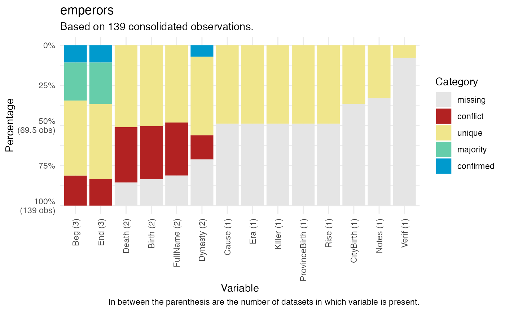
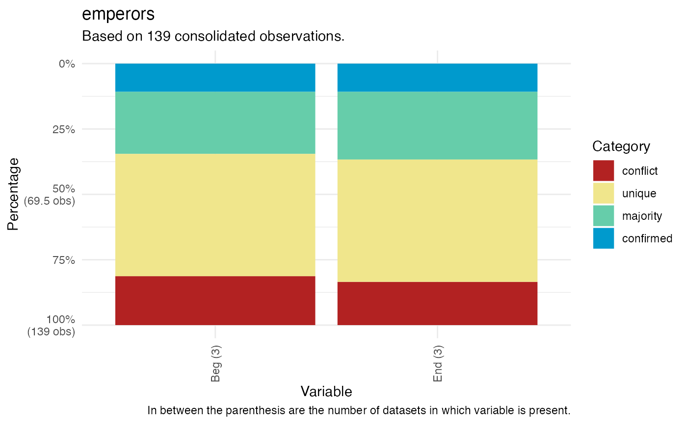
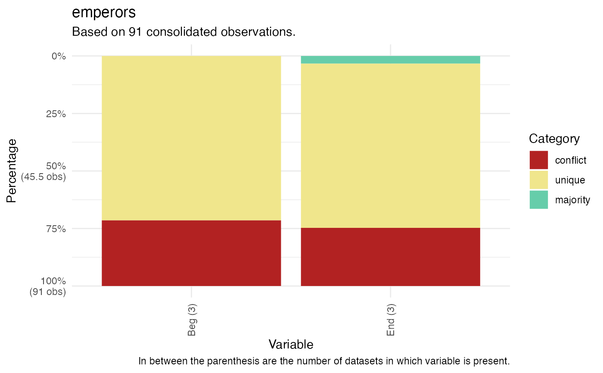

Database profiling functions that returns confirmed, unique, missing, conflicting, or majority values in all (non-ID) variables in the datasets in a 'many' package database.
Usage
db_plot(database, key = "manyID", variable = "all", category = "all")
db_comp(database, key = "manyID", variable = "all", category = "all")Arguments
- database
A many database.
- key
A variable key to join datasets by, "manyID" by default.
- variable
Would you like to focus on one, or more, specific variables? By default "all". For multiple variables, please declare variable names as a vector.
- category
Would you like to focus on one specific code category? By default "all" are returned. Other options include "confirmed", "unique", "missing", "conflicting", or "majority". For multiple variables, please declare categories as a vector.
Value
A plot, or a tibble, with the profile of the variables across all datasets in a "many" database. For multiple categories across multiple variables, the functions return all rows that contain at least one of the selected variables coded as one of the categories.
Details
Confirmed values are the same in all datasets in database. Unique values appear once in datasets in database. Missing values are missing in all datasets in database. Conflicting values are different in the same number of datasets in database. Majority values have the same value in multiple, but not all, datasets in database.
db_plot() plots the database profile.
db_comp() creates a tibble comparing the variables in a database.
Examples
# \donttest{
db_plot(database = emperors, key = "ID")
#> There were 116 matched observations by ID variable across datasets in database.

db_plot(database = emperors, key = "ID", variable = c("Beg", "End"))
#> There were 116 matched observations by ID variable across datasets in database.

db_plot(database = emperors, key = "ID", variable = c("Beg", "End"),
category = c("conflict", "unique"))
#> There were 116 matched observations by ID variable across datasets in database.

# }
# \donttest{
db_comp(database = emperors, key = "ID")
#> There were 116 matched observations by ID variable across datasets in database.
#> # A tibble: 139 × 37
#> ID `wikipedia$Beg` `UNRV$Beg` `britannica$Beg` `Beg (3)` `wikipedia$End`
#> <chr> <mdate> <mdate> <mdate> <chr> <mdate>
#> 1 August… -0026-01-16 -0027 -0031 conflict 0014-08-19
#> 2 Tiberi… 0014-09-18 -0014 0014 conflict 0037-03-16
#> 3 Caligu… 0037-03-18 NA 0037 conflict 0041-01-24
#> 4 Claudi… 0041-01-25 0041 0041 majority 0054-10-13
#> 5 Nero 0054-10-13 0054 0054 majority 0068-06-09
#> 6 Galba 0068-06-08 0068 0068 majority 0069-01-15
#> 7 Otho 0069-01-15 0069 0069-01 conflict 0069-04-16
#> 8 Vitell… 0069-04-17 0069 NA conflict 0069-12-20
#> 9 Vespas… 0069-12-21 0069 0069 majority 0079-06-24
#> 10 Titus 0079-06-24 0079 0079 majority 0081-09-13
#> # ℹ 129 more rows
#> # ℹ 31 more variables: `UNRV$End` <mdate>, `britannica$End` <mdate>,
#> # `End (3)` <chr>, `wikipedia$FullName` <chr>, `UNRV$FullName` <chr>,
#> # `FullName (2)` <chr>, `wikipedia$Birth` <chr>, `UNRV$Birth` <chr>,
#> # `Birth (2)` <chr>, `wikipedia$Death` <chr>, `UNRV$Death` <chr>,
#> # `Death (2)` <chr>, `wikipedia$CityBirth` <chr>, `CityBirth (1)` <chr>,
#> # `wikipedia$ProvinceBirth` <chr>, `ProvinceBirth (1)` <chr>, …
db_comp(database = emperors, key = "ID", variable = "Beg")
#> There were 116 matched observations by ID variable across datasets in database.
#> # A tibble: 139 × 5
#> ID `wikipedia$Beg` `UNRV$Beg` `britannica$Beg` `Beg (3)`
#> <chr> <mdate> <mdate> <mdate> <chr>
#> 1 Augustus -0026-01-16 -0027 -0031 conflict
#> 2 Tiberius 0014-09-18 -0014 0014 conflict
#> 3 Caligula 0037-03-18 NA 0037 conflict
#> 4 Claudius 0041-01-25 0041 0041 majority
#> 5 Nero 0054-10-13 0054 0054 majority
#> 6 Galba 0068-06-08 0068 0068 majority
#> 7 Otho 0069-01-15 0069 0069-01 conflict
#> 8 Vitellius 0069-04-17 0069 NA conflict
#> 9 Vespasian 0069-12-21 0069 0069 majority
#> 10 Titus 0079-06-24 0079 0079 majority
#> # ℹ 129 more rows
db_comp(database = emperors, key = "ID", variable = c("Beg", "End"),
category = "conflict")
#> There were 116 matched observations by ID variable across datasets in database.
#> # A tibble: 26 × 9
#> ID `wikipedia$Beg` `UNRV$Beg` `britannica$Beg` `Beg (3)` `wikipedia$End`
#> <chr> <mdate> <mdate> <mdate> <chr> <mdate>
#> 1 August… -0026-01-16 -0027 -0031 conflict 0014-08-19
#> 2 Tiberi… 0014-09-18 -0014 0014 conflict 0037-03-16
#> 3 Caligu… 0037-03-18 NA 0037 conflict 0041-01-24
#> 4 Otho 0069-01-15 0069 0069-01 conflict 0069-04-16
#> 5 Vitell… 0069-04-17 0069 NA conflict 0069-12-20
#> 6 Commod… 0177 0180 0177 conflict 0192-12-31
#> 7 Pertin… 0193-01-01 0193 NA conflict 0193-03-28
#> 8 Didius… 0193-03-28 0193 NA conflict 0193-07-01
#> 9 Caraca… 0198 0211 0198 conflict 0217-04-08
#> 10 Geta 0209 0211 NA conflict 0211-12-26
#> # ℹ 16 more rows
#> # ℹ 3 more variables: `UNRV$End` <mdate>, `britannica$End` <mdate>,
#> # `End (3)` <chr>
db_comp(database = emperors, key = "ID", variable = c("Beg", "End"),
category = c("conflict", "unique"))
#> There were 116 matched observations by ID variable across datasets in database.
#> # A tibble: 91 × 9
#> ID `wikipedia$Beg` `UNRV$Beg` `britannica$Beg` `Beg (3)` `wikipedia$End`
#> <chr> <mdate> <mdate> <mdate> <chr> <mdate>
#> 1 August… -0026-01-16 -0027 -0031 conflict 0014-08-19
#> 2 Tiberi… 0014-09-18 -0014 0014 conflict 0037-03-16
#> 3 Caligu… 0037-03-18 NA 0037 conflict 0041-01-24
#> 4 Otho 0069-01-15 0069 0069-01 conflict 0069-04-16
#> 5 Vitell… 0069-04-17 0069 NA conflict 0069-12-20
#> 6 Antoni… 0138-07-10 NA NA unique 0161-03-07
#> 7 Commod… 0177 0180 0177 conflict 0192-12-31
#> 8 Pertin… 0193-01-01 0193 NA conflict 0193-03-28
#> 9 Didius… 0193-03-28 0193 NA conflict 0193-07-01
#> 10 Septim… 0193-04-09 NA NA unique 0211-02-04
#> # ℹ 81 more rows
#> # ℹ 3 more variables: `UNRV$End` <mdate>, `britannica$End` <mdate>,
#> # `End (3)` <chr>
# }